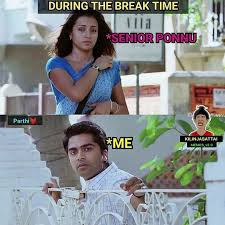

-
AshVin 🖤💜
Tall, kind of curly hair, feel like smile when she walks,lovely voice... hates foul language... Childish,Angry bird. she has her own style, hardly use make-ups....she likes me crazy.she's still there in my life EvEr..
All It started Here...!
Whenever I feel like my life isn’t what I wanted it to be, I escape into a world where that cycle was the happiest time of my day. Because that was the time I did what my heart wanted, no repercussions, no second thoughts, I just went for it, unlike last year when I saw that lopsided grin turn upside down as I returned the ring. Now those small fights, those disagreements don’t seem as big as the memory of the cycle and I wish there was a way to pedal backwards.
With Love,
AshVin🖤💜With Love,
AshVin🖤💜AshVin 🖤💜